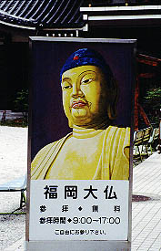
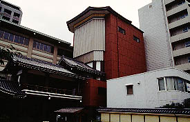
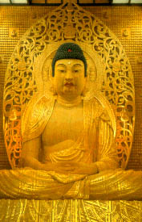
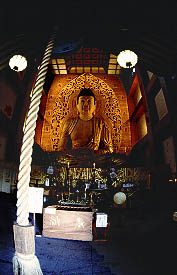
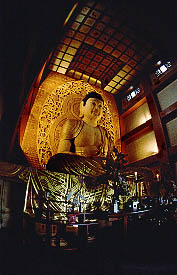
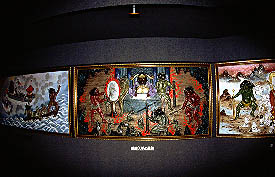
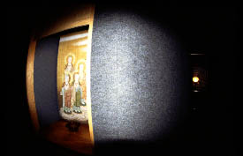
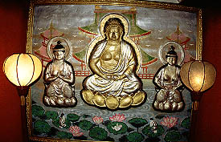
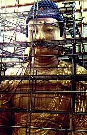
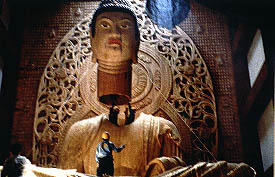

福岡大仏/福岡県福岡市
木造座像では日本一とうたわれる福岡大仏なる大仏がおわす。
その寺の名前は東長寺。博多駅が近くに見えるという大通り沿いの福岡の一等地にある。恐らく土地の価値を考えると九州屈指の資産持ち寺院なのではなかろうか。別に宗教法人だから関係ないだろうけど。
ここのお寺は弘法大師が唐での修行を終えて日本に帰って来た際、最初に建てたと言われる寺である。
大師創建最古の寺、博多駅至近、しかも大仏持ち。これ以上ハクの付け様がないくらいの寺である。

その通りに面したいかした看板。拝観無料。偉い。拝観料で糊口をしのぐ観光寺院とは一線を画す心意気がぶんぶん薫ってくる。
境内には回転六角厨子を備えた六角堂（普段は非公開）があるくらいであとはコンクリートの建物、趣はない。本堂には元国宝の千手観音が祀られているが通常は非公開のため早々に大仏殿に向かう。
コンクリート造のやけに窓の少ない建物が大仏殿である。もう少し外観から大仏気分を盛り上げてくれても良さそうなものだが入場無料なので文句は言うまい。

で、内部。建物の中に入るといっきなり登場する。うおお、こ、こいはでっかか〜。撮影禁止との事なので絵葉書の写真を載せときます。

あ、間違えてシャッター押しちゃった・・・
 
・・・大仏の高さは10.8メートル。光背が16.1メートル、光背には5000体の小仏が祀られているそうだ。重さは30トン。木目と金塗装のコラボレーションがカッコイイざんす。
製作は昭和63年から4年間。総檜造。お顔は下膨れ、もといふくよかな顔だちである。
ところでこの大仏さん、どうやってこの建物の中に入れたんだろう。懐かしの三球照代のギャグじゃないけど考えたら眠れなくなっちゃうゾ。そういえば三球照代って今、巣鴨の地蔵通り商店街でお年寄り向け健康下着とか売ってんだよなあ・・・
台座の左側に地獄極楽巡りの看板が。入ってみるとおどろおどろしいサウンドが流れる中、地獄絵図が展開されている。
 
それを過ぎると今度は戒壇巡り。恐ろしい地獄絵を見た後だけに真っ暗闇で蛇行する通路は結構恐怖心を煽られる。

そして真っ暗な通路が終わると極楽なのだろう、仏様のレリーフが一つ懸けられている。で、外に出ると大仏さんの台座の向かって右側に出た。丁度大仏さんの台座の中を左から右に抜けた塩梅になる。あ〜楽しかった。
となりの宝物館で弘法さんが書いた額などの寺宝を見て休憩所へ。そこに大仏製作の工事中の写真が飾られていた。
 
大仏さん、建物の天井から吊られて入ってきたのかあ・・・
しつこく繰り返すようだが入場は無料。俺が博多駅前に勤める営業マンだったら絶対毎日昼寝に来るね。
2000.7.
追記；文中において大仏が台湾製であると記述しましたが、読者の方から日本製であるとの御指摘を受けました。
つきましては台湾製であるとの記述を削除させていただきました。
関係諸氏に御迷惑をおかけした事をお詫び申し上げます。
2002.10.17.
珍寺大道場
HOME